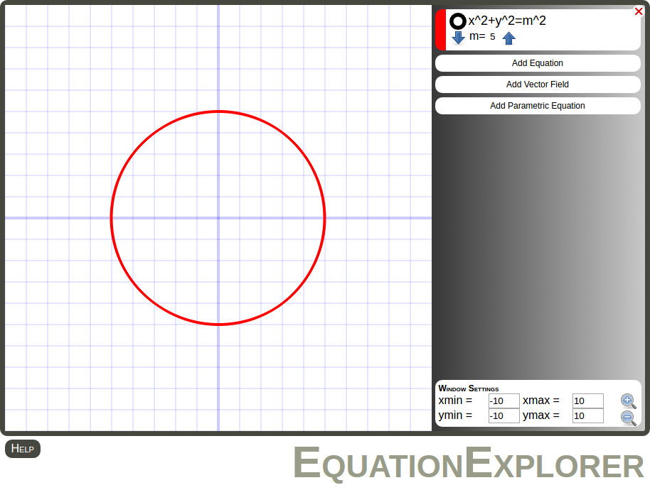

Keegan Mehall
Below are links to a few of my programming projects. They are works in progress and may not be fully compatable with all web browsers. They have been tested in Firefox and Chrome.
RC Circuit Simulation

A simulation of the behavior of an RC (Resistor-Capacitor) circuit. Users can manipulate different components by changing the resistance and capacitance or by changing the behavior of the voltage source. Impacts can be seen in real time on the graph and through the color coded voltage scale.
Dots Game

A puzzle game inspired by the traveling salesman problem. Users find the shortest path through all dots starting at the green dot and ending with the red dot. (This differs from the traditional traveling salesman problem, in which the route must return to the starting point.) It is often harder than it sounds.
EquationExplorer
An equation grapher supporting implicit and parametric equations and vector fields. In one of my first programming projects, I added the parametric grapher and later combined all three graph types, which were on separate pages, allowing comparisons between them. The implicit equation grapher and vector field grapher were originally built by my brother Kevin Mehall.